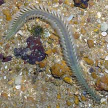
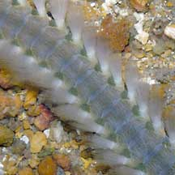
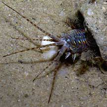
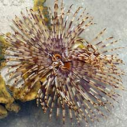
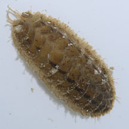

|
|
| worms text index | photo index |
| worms > Phylum Annelida > Class Polychaeta |
| Bristleworms Class Polychaeta updated Oct 2019
Where seen? Bristleworms are abundant on our shores. Even the most 'beat up' shore will have these worms. But they are rarely seen as they burrow in the ground or remain in other hiding places. In coral rubble, giant reef worms that grow to 1m long hide inside crevices. Others about 10cm long crawl about in sandy and muddy areas. Some beautiful ones swim about in the water. Others live in tubes. Countless microscopic ones too small to see live among the sand grains. What are bristleworms? Bristleworms are segmented worms belonging to Phylum Annelida like the more familiar earthworm. There are about 8,000 species of polychaete worms, making them the largest class of the segmented worms. Features: These worms have bodies that are divided into segments. Except for the head and last segment, all the segments are generally similar. Each segment has a pair of flattened extensions called parapodia. These appendages are usually branched at the ends and covered with bristles, called setae. 'Polychaeta' means 'many bristles'. And indeed, they have lots of bristles. These bristly appendages are sometimes used to move (much like a centipede does) and to burrow. In tubeworms, the appendages help grip the tube walls and to move up and down the tubes. In some large active bristleworms that need more oxygen, the parapodia function as gills. Sometimes confused with brittlestars. Here's more on how to tell them apart. |
 Pulau Sekudu, Aug 04 |
 Bristles on the sides of the worm |
 This tiny tubeworm has eyes, tentacles, and feathery appendages on the sides that act as gills. Changi, Jul 04 |
| Complex worms: Bristleworms are
rather complex and well developed. Most have a well-developed blood
circulatory system. Their heads bear eyes (from 2 to 4 pairs), sensory
organs, the mouth and contain a brain. Many have specialised feeding
structures on their head. These can range from powerful jaws to long
tentacles that collect food. Bristleworms have amazing powers of regeneration. Many can replace body parts that get chomped off by predators. This even includes the head! Mobile versus immobile: The various kinds of bristleworms are often grouped into those that are free-moving (called errant polychaetes) and those that are not (called sedentary polychaetes). These sedentary worms usually live in tubes or burrows. However, the distinction is not always clear. There are errant polychaetes that live in tubes or don't move about much and hide in burrows or other places. Beautiful worms: Large, freely-moving bristleworms can be attractive, with iridescent colours in shades of red, pink and green. Among the most beautiful of bristleworms is the fan worm (Family Sabellidae) with a delicate, patterned feathery fan of feeding tentacles. Monster worm: While bristleworms we commonly see grow to about 10cm long, the Giant reef worm can grow to more than 1m long!
|
 This fireworm swims actively and has really elaborate bristles. Raffles Marina, Apr 05 |
 Fanworms are bristleworms with a delicate fan of feathery tentacles on their heads. Pulau Hantu, Aug 04 |
 Scale worms are tiny and often overlooked. Terumbu Pempang Laut, May 12 |
| What do they eat? Some bristleworms
are ferocious predators, hunting other worms and small animals. These
are captured with strong jaws that can be extended and retracted.
Some can inject a poison with their jaws. Some predatory bristleworms
live in tubes where they lie in wait for suitable prey. Other bristleworms feed harmlessly on algae, others are scavengers. Yet others feed on detritus. They may swallow sand and mud and process these for the edible bits, others have tentacles and other appendages on their heads to sweep the surface for detritus or collect detritus suspended in the water. The fanworm has feathery tentacles to filter food from the water. Worm babies: While some bristleworms can reproduce asexually by budding or dividing their bodies into parts, most bristleworms reproduce sexually. Most bristleworms have separate genders. In some, eggs and sperm are released into the water simultaneously where they are fertilised. In many, the eggs develop into free-swimming larvae that drift with the plankton before settling down and developing into new bristleworms. Ripping apart to reproduce! Some bristleworms reproduce by epitoky: a portion of the bristleworm becomes packed with eggs or sperm and becomes highly specialised for swimming, some even developing eyes! This portion is called the epitoke. At mating time, the epitoke breaks off from the main worm and can move about on its own. Swimming to the surface, it is joined by the epitokes of other bristleworms. At the surface, the epitokes burst apart, releasing eggs and sperm for external fertilisation. In this way, the worms can reproduce without exposing the rest of their bodies to danger. However, while an epitoke might be a new segment produced by the animal, sometimes the entire animal is remodelled into an epitoke and rips itself apart during mating. Mating is usually triggered by the lunar cycle. The Singapore Biodiversity Records has an article that might be related to bristleworm reproduction: "Hundreds of mud-worms, mostly metallic blue but some pale red, each around 20 to 30 cm long, were observed swimming about in the water (see accompanying picture), and appeared to be gradually growing in numbers. Very little is known about the life cycle of this large worm. It is suspected that the swarming phenomenon ties in with their reproductive strategy, where sexually mature worms swim to the water surface in temporal and spatial synchrony to increase the chances of successful fertilisation of their eggs." Role in the ecosystem: Bristleworms are eaten by many creatures higher up in the food chain. Shorebirds, for example, depend on worms for sustenance to make their long migrations. Human uses: Fishermen sometimes dig out bristleworms to use as bait. Status and threats: Like other creatures of the intertidal zone, they are affected by human activities such as reclamation and pollution. Trampling by careless visitors and over-collection can also have an impact on local populations. |
Class Polychaeta recorded for Singapore (some families)
from Wee Y.C. and Peter K. L. Ng. 1994. A First Look at Biodiversity in Singapore.
in red are those listed among the threatened animals of Singapore from Davison, G.W. H. and P. K. L. Ng and Ho Hua Chew, 2008. The Singapore Red Data Book: Threatened plants and animals of Singapore.
*from A Guide to Singapore Polychaetes by Lim Yun Ping 1997-2000.
**from WORMS
| Bristleworms
seen awaiting identification Species are difficult to positively identify without close examination. On this website, they are grouped by external features for convenience of display. |
| Gregarious
tubeworms Many bristleworms live in tubes and are called tubeworms Spaghetti worms |
| Family Amphinomidae |
| Chloeia sp. (Beautiful fireworm) Chloeia capillata=**Chloeia flava Chloeia flava Eurythoe complanata (Reef bristleworms) |
| Family Capitellidae |
| Capitella
capitata Notomastus sp. |
| Family Chaetopteridae (straw tubeworms) |
| *Chaetopterus
cariopedatus Chaetopterus variopedatus (EN: Endangered) |
| Family Cirratulidae |
| Cirratulus cirratulus |
| Family Cirratulidae |
| Cirratulus cirratulus |
| Family Eunicidae |
| Eunice
antennata=**Leodice antennata Eunice aphroditois (Giant reef worm) Eunice coccinioides Eunice grubei Eunice hirschi Eunice lucei=**Leodice lucei Eunice nesiotes Euniphysa aculeata Lysidice collaris Marphysa disjuncta Marphysa macintoshi Marphysa mossambica |
| Family Hesionidae |
| Oxydromus cf. angustifrons (Urchin-mouth worm) |
| Family Onuiphidae |
| Diopatra sp. (Solitary tube worm) Diopatra neapolitana *Diopatra bulohensis=**Diopatra claparedii |
| Family Polynoidae (scale worms) |
| Lepidonotus sp. Paralepidonotus ampulliferus |
| Family Sabellidae (fan worms) with list of species recorded for Singapore |
| Family Serpulidae (keelworms) |
| Spirobranchus sp. |
| Family Spionidae |
| Paraprionospio sp. Polydora sp. Prionospio komaeti Prionospio malayensis |
| Family Terebellidae (terebellid worms) |
| Loimia
medusa Nicolea gracilibranchis Thelepus gracilis Thelepus setosus |
| Acknowledgement With grateful thanks to Leslie H. Harris of the Natural History Museum of Los Angeles County for comments on and identifying some of these bristleworms. Links
References
|